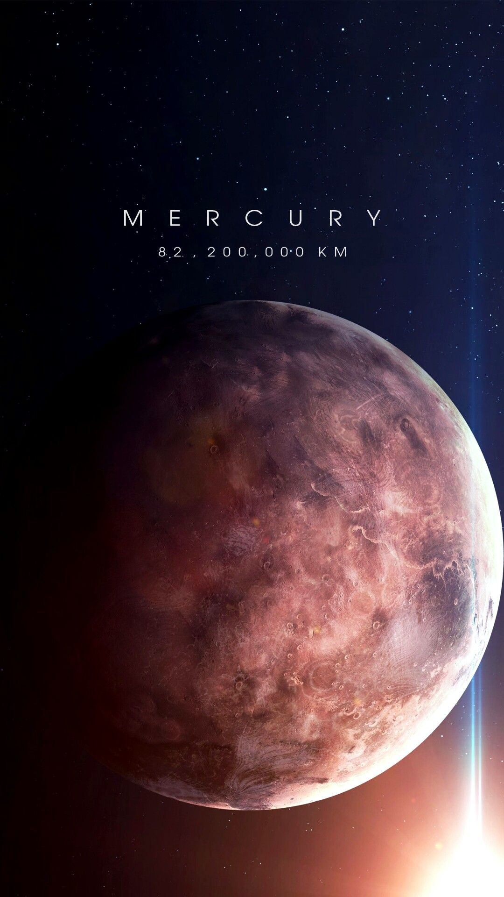
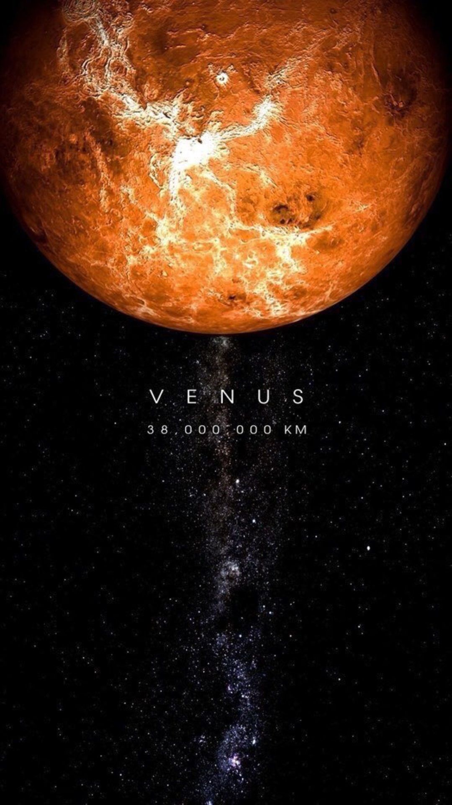
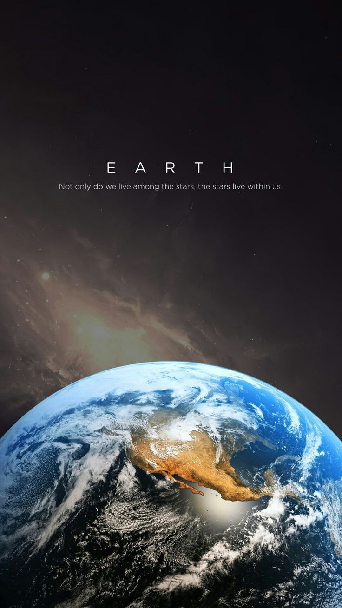
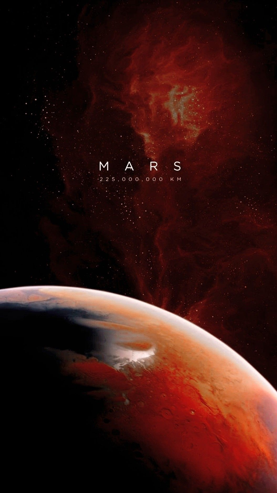
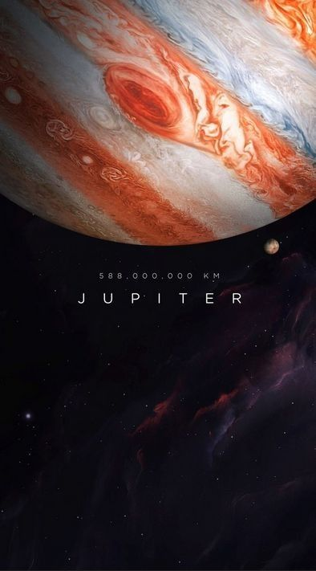
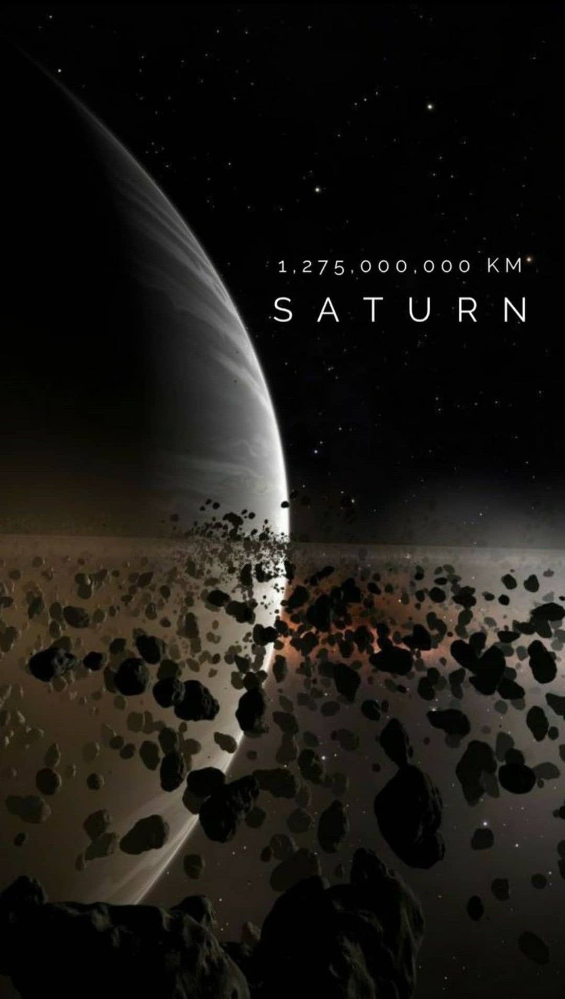
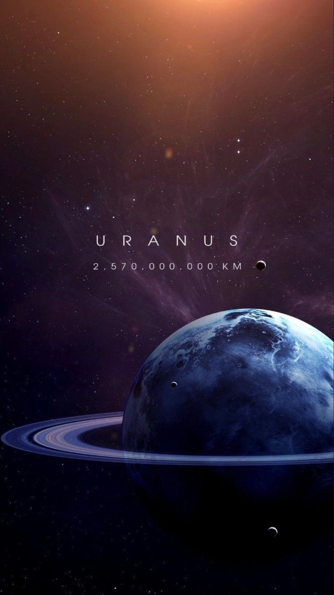
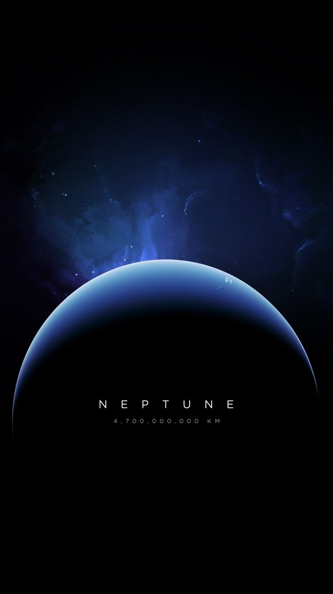
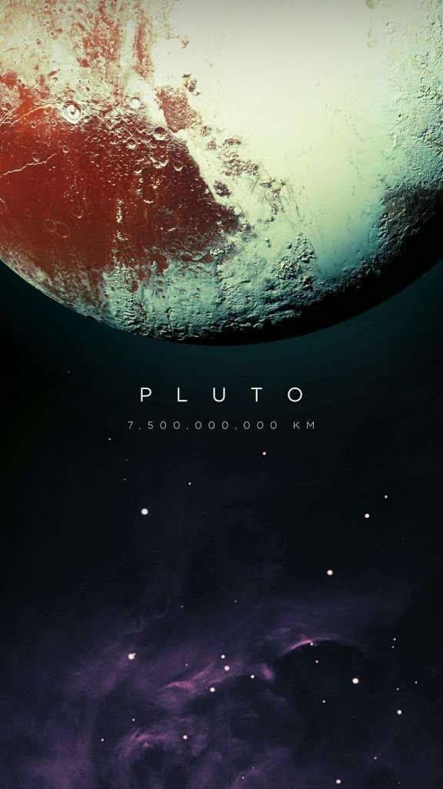

|  |
1.MerkürGüneş sistemi gezegenleri arasında güneşe en yakın gezegen olan Merkür Dünyanın uydusu Ay’dan az miktarda daha büyüktür. Gündüzleri yüzey sıcaklığı 450 dereceyi bulurken geceleri de sıcaklık -200 dereceye kadar düşmektedir. Herhangi bir atmosferi olmadığı için meteor yağmurlarına karşı herhangi bir koruması yoktur. Bu yüzden yüzeyinde Ayda olduğu birçok krater mevcuttur. NASA’nın Messenger uzay aracı astronomların beklentilerini karşılayacak görüntüleri ortaya çıkarttı. Merkür’ün kendi ekseni ve güneşin etrafında dönme sürelerinin birbirleriyle uyumsuz olmasının başlıca nedeni Güneşe çok yakın olduğu için çekim kuvvetinden dolayı güneşin etrafını hızlı dönüyorlar. Ancak kendi ekseni etrafında da bir o kadar yavaş dönüyorlar.
İsim: Roma Tanrılarının Elçisi |
|  |
2.VenüsGüneş sistemi gezegenleri arasında güneşe en yakın 2. gezegen olan Venüs inanılmaz derecede sıcak hatta Merkür’den bile sıcaktır. Atmosferi zehirlidir. Yüzeydeki basınç o kadar fazladır ki Venüs’e ayak bastığımız anda ölürüz. Bilim adamları Venüs’ün durumunu sera etkisinin ileri düzeyi olarak açıklıyor. Yani gezegenimizin ileride dönüşebileceği bir hal. Büyüklüğü ve yapısı Dünyaya oldukça benzerdir. İsim: Roma aşk ve güzellik tanrıçası |
|  |
3.DünyaGüneş sistemi gezegenleri arasında güneşe en yakın 3. gezegen olan Dünya üçte ikisi sularla kaplı bir gezegendir. Dünya yaşama ev sahipliği yapan bildiğimiz tek gezegendir. Dünya atmosferi yaşamın devamlılığını sürdüren nitrojen ve oksijen bakımından zengindir. Dünyanın yüzeyi kendi ekseni etrafında saniyede 467 metre hızla döner. Güneşin etrafında da saniyede 29 km hızla döner.
Çap: 12760 km |
|  |
4.MarsGüneş sistemi gezegenleri arasında güneşe yakınlığı bakımından 4. gezegen olan Mars soğuk ve tozlu bir yerdir. Demir oksit içeren bu toz marsa kızılın rengini veren şeydir. Mars Dünyayla birçok benzer özellik paylaşır: Dağları, vadileri, kayalıkları ve gezegeni yutan bir toz canavarına benzeyen kum fırtınaları ve devasa hortumlar vardır.Mars da kar da yağar ve Mars ayrıca su tabanlı bir buz kütlesini bünyesinde barındırır. Bilim adamları Marsın bir zamanlar yaşama elverişli ılıman bir iklime , deniz, okyanus ve nehirleresahip olduğunu düşünüyorlar. Bilim adamları Mars yüzeyinde muhtemel geçmiş yaşama dair işaretler arıyorlar ve Marstaki uzay aracımız Curiosity’e göre ilkel bakteri düzeyinde yaşam formları bulunabilir. İsim: Roma Savaş Tanrısı |
|  |
5.JüpiterGüneşe en yakın 5. gezegen olan Jüpiter güneş sistemi gezegenleri içerisindeki en büyük ve en ağır gezegenidir. Bu gezegen çoğunlukla hidrojen ve helyumdan oluşmuş bir gaz dünyasıdır. Girdap bulutları da değişik türdeki gazlar nedeniyle renklidir. Jüpiter üzerindeki devasa kırmızı nokta, gezegenin en şiddetli fırtınalarının yüzyıllardır gerçekleştiği yerdir. Jüpiter’in çok güçlü bir manyetik alanı vardır. Bu yüzden düzinelerce uydusu mevcuttur. Minyatür bir güneş sistemine benzer. İsim: Roma Tanrılarının Yöneticisi |
|  |
6.SatürnGüneş sistemi gezegenleri arasında devasa halkasıyla bilinen güneşe uzaklığı bakımından 6. gezegendir. Bu gaz gezegeni genellikle hidrojen ve helyumdan oluşmaktadır ve birçok uydusu mevcuttur. Bu gezegeni büyüleyici kılan en önemli özelliği de tartışmasız kaya buzdan oluşan halkalarıdır. Bilim adamları bu halkaların nasıl oluştuğu konusunda daha emin değiller. İsim: Roma Tarım Tanrısı |
|  |
7.UranüsGüneşten itibaren 7. gezegen olan Uranüs enterasan bir gezegendir. Ekseninin yatay olduğu güneş sistemi gezegenleri arasındaki tek gezegendir. Astronomlar uzun zaman önce Uranüs’ün başka gezegenlerle çarpıştığını ve bununda gezegenin eksen eğikliğini değiştirdiğini düşünüyor. Bu değişiklik ise gezegenin mevsimlerini ve yıllarını muazzam bir şekilde etkilemiştir. Uranüs Neptün ile hemen hemen aynı büyüklüktedir. Bünyesinde barındırdığı amonyak, su ve metanın miktarından ötürü bir buz devidir. İsim: İlkel mitte cennetin kişileştirilmesine denir. |
|  |
8.NeptünGüneş sistemi gezegenleri arasında güneşten itibaren 8. gezegen olan Neptün bazen ses hızından bile yüksek hızda esen rüzgarlarıyla bilinir. Bu gezegenin Güneşe olan uzaklığı Dünyanın Güneşe olan uzaklığından 30 kat daha fazladır. Kayalıklı bir çekirdeği vardır. Neptün, tespit edilmeden önce varlığı matematiksel olarak tahmin edilen ilk gezegendir. Ayrıca Neptün Dünyadan 17 kat daha ağırdır. İsim: Roma Su Tanrısı |
|  |
9.Pluto (Cüce Gezegen)Aydan bile küçük olan bu cüce gezegen 1979’den 1999 yılı başına kadar güneş sistemi gezegenleri arasında sekizinci gezegen olarak kabul ediliyordu. 11 şubat 1999 yılında Neptün’ün yörünge istikametine geçti ve tekrar cüce gezegen statüsünde ilan edilene kadar solar sistemin en uzak gezegeni haline geldi. Pluto 228 yıl boyunca Neptün’ün arkasında kalacak. Pluto’nun yörüngesi güneş sisteminin diğer gezegenlerinin ana düzlemine göre 17 derece eğiktir. Soğuk, kayalıklı ve geçici bir atmosfere sahip bir yerdir. NASA’nın Yeni Ufuklar uzay aracı 14 Temmuz, 2015’de tarihin ilk alçaktan uçuşunu gerçekleştirerek bize bu cüce gezegenden görüntüler gönderdi. İsim: Yeraltı Dünyasının Roma Tanrısı |